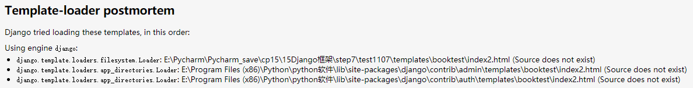
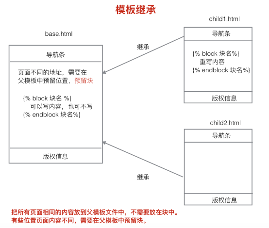
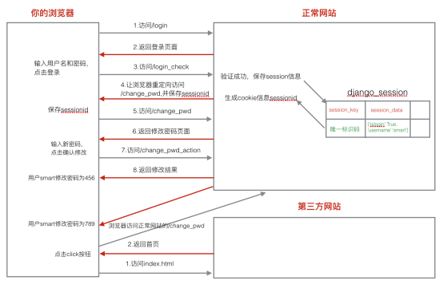

原文连接:https://www.cnblogs.com/yifchan/p/python-1-29.html
Django1.8.2中文文档：Django1.8.2中文文档
模板
模板注释
单行注释：
{# 注释内容 #}多行注释：
{% comment %}
注释内容
{% endcomment %}注意，模板注释和html注释不同，html注释后浏览器检查还能看到朱时候的代码，但模板注释不能被看到。
模板的功能
产生html，控制页面上展示的内容。模板文件不仅仅是一个html文件。
模板文件包含两部分内容：
1)静态内容：css,js,html。
2)动态内容：用于动态去产生一些网页内容。通过模板语言来产生。
模板文件的使用
通常是在视图函数中使用模板产生html内容返回给客户端。
a)加载模板文件 loader.get_template
获取模板文件的内容，产生一个模板对象。
b)定义模板上下文 RequeseContext
给模板文件传递数据。
c)模板渲染产生html页面内容 render
用传递的数据替换相应的变量，产生一个替换后的标准的html内容。
不用render自己渲染模板示例/ 给一个函数使用templates模板
def index(request):
# 1.加载模板文件，获取一个模板对象
temp = loader.get_template('booktest/index.html')
# 2.定义模板上下文，给模板文件传数据
# context = RequestContext(request, {}) # 在django1.11中不能使用这种方法，只能直接定义一个字典
context = {}
# 3.模板渲染，产生一个替换后的html内容
res_html = temp.render(context)
# 4.返回应答
return HttpResponse(res_html)自定义render渲染模板示例/ 抽离出templates渲染函数给多个视图函数使用
def my_render(request, template_path, context={}):
# 1.加载模板文件，获取一个模板对象
temp = loader.get_template(template_path)
# 2.定义模板上下文，给模板文件传数据
# context = RequestContext(request, context)
# context = {}
# 3.模板渲染，产生一个替换后的html内容
res_html = temp.render(context)
# 4.返回应答
return HttpResponse(res_html)
def index(request):
# return render(request, 'booktest/index.html')
return my_render(request, 'booktest/index.html')
模板文件加载顺序
1)首先去配置的模板目录下面去找模板文件。
2)去INSTALLED_APPS下面的每个应用的templates去找模板文件，前提是应用中必须有templates文件夹。
# index2页面未创建
def index2(request):
"""模板文件的加载顺序"""
return my_render(request, 'booktest/index2.html')报错结果

模板语言
模板语言简称为DTL。（Django Template Language）
模板变量
模板变量名是由数字，字母，下划线和点组成的，不能以下划线开头。
使用模板变量：
{{模板变量名}}模板变量的解析顺序：
例如：{{ book.btitle }}
- 1)首先把book当成一个字典，把btitle当成键名，进行取值book['btitle']
- 2)把book当成一个对象，把btitle当成属性，进行取值book.btitle
- 3)把book当成一个对象，把btitle当成对象的方法，进行取值book.btitle
例如：{{book.0}}
- 1)首先把book当成一个字典，把0当成键名，进行取值book[0]
- 2)把book当成一个列表，把0当成下标，进行取值book[0]
如果解析失败，则产生内容时用空字符串填充模板变量。
使用模板变量时，.前面的可能是一个字典，可能是一个对象，还可能是一个列表。
使用模板变量示例
模板变量函数
def temp_var(request):
"""模板变量"""
my_dict = {"title": "字典键值"}
my_list = [1, 2, 3]
book = models.BookInfo.objects.get(id=1)
# 定义模板上下文
context = {'my_dict': my_dict, 'my_list': my_list, 'book': book}
return render(request, 'booktest/temp_var.html', context)模板变量html代码(booktest/temp_var.html)
<!DOCTYPE html>
<html lang="en">
<head>
<meta charset="UTF-8">
<title>模板变量</title>
<meta name="viewport" content="width=device-width, initial-scale=1">
</head>
<body>
使用字典属性：{{ my_dict.title }} <br>
使用列表元素：{{ my_list.1 }} <br>
使用对象属性：{{ book.btitle }}
</body>
</html>
模板标签
模板标签使用格式：
{% 代码段 %}for循环：
{% for x in 列表 %}
# 列表不为空时执行
{% empty %}
# 列表为空时执行
{% endfor %}可以通过{{ forloop.counter }}得到for循环遍历到了第几次。
if判断：
{% if 条件 %}
{% elif 条件 %}
{% else %}
{% endif %}
关系比较操作符：> < >= <= == !=
注意：进行比较操作时，比较操作符两边必须有空格。
逻辑运算：not and or
django内置标签与过滤器文档：内置标签与过滤器文档 或者 https://yiyibooks.cn/xx/django_182/ref/templates/builtins.html
模板标签使用示例
函数
def temp_tags(request):
"""模板标签"""
books = models.BookInfo.objects.all()
return render(request, 'booktest/temp_tags.html', {'books': books})html代码


<!DOCTYPE html>
<html lang="en">
<head>
<meta charset="UTF-8">
<title>模板标签</title>
<meta name="viewport" content="width=device-width, initial-scale=1">
<style>
.red {background-color: red;}
.blue {background-color: blue;}
.gray {background-color: gray;}
</style>
</head>
<body>
<h1>模板标签</h1>
<ul>
{% for book in books %}
{% if book.id <= 2 %}
<li class="red">{{ forloop.counter }}--{{ book.btitle }}</li>
{% elif book.id <= 3 %}
<li class="blue">{{ forloop.counter }}--{{ book.btitle }}</li>
{% else %}
<li class="gray">{{ forloop.counter }}--{{ book.btitle }}</li>
{% endif %}
{% endfor %}
</ul>
</body>
</html>
过滤器
过滤器其实就是python函数。
过滤器用于对模板变量进行操作。
- date：改变日期的显示格式。
- length:求长度。字符串，列表.
- default:设置模板变量的默认值。
格式：
模板变量｜过滤器：参数自定义过滤器。
自定义的过滤器函数，至少有一个参数，最多两个
过滤器的使用示例
过滤器函数
def temp_filter(request):
"""模板过滤器"""
books = models.BookInfo.objects.all()
return render(request, 'booktest/temp_filter.html', {'books': books})过滤器html代码
<!DOCTYPE html>
<html lang="en">
<head>
<meta charset="UTF-8">
<title>模板过滤器</title>
<meta name="viewport" content="width=device-width, initial-scale=1">
<style>
.red {background-color: red;}
.blue {background-color: blue;}
.gray {background-color: gray;}
</style>
</head>
<body>
<h1>模板标签</h1>
<ul>
{% for book in books %}
{% if book.id <= 2 %}
<li class="red">{{ book.btitle }}--{{ book.bpub_date|date:'Y-m-d' }}</li>
{% else %}
{# 加了length后，会将原来的图书名编程图书名长度的数字 #}
<li class="gray">{{ book.btitle|length }}--{{ book.bpub_date }}</li>
{% endif %}
{% endfor %}
</ul>
default过滤器：
{# 如果content没有值，则过滤器会显示默认的值 #}
{{ content|default:"hello" }}
</body>
</html>注意：过滤器中，冒号后不能加空格，
例如{{ book.bpub_date|date:'Y-m-d' }}是正确的，而{{ book.bpub_date|date: 'Y-m-d' }}是错误的。
否则会报错，Could not parse the remainder: ': 'Y-m-d'' from 'book.bpub_date|date: 'Y-m-d''
自定义过滤器
自定义过滤器
- 1.在自己的应用下面新建一个 templatetags 文件夹，名字固定；
- 2.在templatetags文件夹下面新建一个py文件，名字自定义，比如filters.py；
- 3.1.在文件中，引入Library类；
- 3.2.创建一个Library类的对象；
- 3.3.定义自己的函数，给函数添加装饰器@register.filter进行过滤器装饰；
使用自定义装饰器
- 1.在需要使用的html文件中导入自定义装饰器文件，{% load filters %}，即 load 文件名；
- 2.使用过滤器；
自定义过滤器示例
import django.template
# 创建一个Library类的对象
register = django.template.Library()
@register.filter
def mod(num):
"""判断num是否为偶数"""
# 如果传过来的num是偶数，则返回True，否则返回False
return num % 2 == 0在html代码中使用模板过滤器
<!DOCTYPE html>
<html lang="en">
{% load filters %}
<head>
<meta charset="UTF-8">
<title>模板过滤器</title>
<meta name="viewport" content="width=device-width, initial-scale=1">
<style>
.red {background-color: red;}
.blue {background-color: blue;}
.gray {background-color: gray;}
</style>
</head>
<body>
<h1>模板标签</h1>
<ul>
{% for book in books %}
{% if book.id|mod %}
<li class="red">{{ book.id }}--{{ book.btitle }}--{{ book.bpub_date|date:'Y-m-d' }}</li>
{% else %}
<li class="gray">{{ book.btitle }}--{{ book.bpub_date }}</li>
{% endif %}
{% endfor %}
</ul>
</body>
</html>
两个参数的自定义过滤器
自定义过滤器
# 自定义的过滤器，最少有一个参数，最多有两个参数
# 只有一个参数的话，由|前面的参数传过来，两个参数的话，：后面再跟一个参数
# 应注意过滤器参数的前后顺序
@register.filter
def mod_val(num, val):
"""判断num是否能把value整除"""
return num % val == 0html代码
<!DOCTYPE html>
<html lang="en">
{% load filters %}
<head>
<meta charset="UTF-8">
<title>模板过滤器</title>
<meta name="viewport" content="width=device-width, initial-scale=1">
<style>
.red {background-color: red;}
.blue {background-color: blue;}
.gray {background-color: gray;}
</style>
</head>
<body>
<h1>模板标签</h1>
<ul>
{% for book in books %}
{# {% if book.id <= 2 %} #}
{# % if book.id|mod %} #}
{% if book.id|mod_val:3 %}
<li class="red">{{ book.id }}--{{ book.btitle }}--{{ book.bpub_date|date:'Y-m-d' }}</li>
{% else %}
{# 加了length后，会将原来的图书名编程图书名长度的数字 #}
<li class="gray">{{ book.btitle|length }}--{{ book.bpub_date }}</li>
{% endif %}
{% endfor %}
</ul>
default过滤器：
{# 如果content没有值，则过滤器会显示默认的值 #}
{{ content|default:"hello" }}
</body>
</html>
模板继承
模板继承也是为了重用html页面内容。

在父模板里可以定义块，使用标签：
{% block 块名 %}
块中间可以写内容，也可以不写
{% endblock 块名%}子模板去继承父模板之后，可以重写父模板中的某一块的内容。
继承格式：
{% extends 父模板文件路径%}
{% block 块名 %}
{{ block.super}} #获取父模板中块的默认内容
重写的内容
{% endblock 块名%}
模板继承示例
base/母模板
<!DOCTYPE html>
<html lang="en">
<head>
<meta charset="UTF-8">
<title>{% block title %}base模板文件的title{% endblock title %}</title>
<meta name="viewport" content="width=device-width, initial-scale=1">
</head>
<body>
<h1>base模板的header</h1>
{% block b1 %}
<h2>base模板的block1</h2>
{% endblock b1 %}
{% block b2 %}
<h2>base模板的block1</h2>
{% endblock b2 %}
<h1>base模板的footer</h1>
</body>
</html>child/子模板
{% extends 'booktest/base.html' %}
{% block title %}child模板中的title{% endblock title %}
{% block b1 %}
{{ block.super }}
<h2>child模板的block1</h2>
{% endblock b1 %}
{% block b2 %}
<h2>child模板的block2</h2>
{% endblock b2 %}配套函数
def temp_inherit(request):
"""返回child模板继承于base的文件"""
return render(request, 'booktest/child.html')在块里面还可以写块，需要注意endblock后面跟 块名 用以区分哪个块结束。
html转义
场景：编辑商品详情信息，数据表中保存的是html内容。
在模板上下文中的html标记默认是会被转义的。
小于号< 转换为<
大于号> 转换为>
单引号' 转换为'
双引号" 转换为 "
与符号& 转换为 &要关闭模板上下文字符串的转义：可以使用
{{ 模板变量|safe}}也可以使用：
{% autoescape off %}
模板语言代码
{% endautoescape %}模板硬编码中的字符串默认不会经过转义，如果需要转义，那需要手动进行转义。
safe和autoescape的区别在于，safe只能转义一个模板变量，而autoescape可以转义多个变量；
html转义示例
html_escape.html
<!DOCTYPE html>
<html lang="en">
<head>
<meta charset="UTF-8">
<title>模板转义</title>
<meta name="viewport" content="width=device-width, initial-scale=1">
</head>
<body>
html转义结果：<br>
{{ content }}<br>
使用safe过滤器关闭转义结果：<br>
{{ content|safe }}<br>
使用autoescape关闭转义结果：<br>
{% autoescape off %}
{{ content }}
{{ content }}
{% endautoescape %}<br>
模板硬编码中的字符串默认不会转义，即会经过html渲染：<br>
{{ test|default:'<h1>hello</h1>' }}<br>
手动对硬编码进行转义：<br>
{{ test|default:'<h1>hello</h1>' }}
</body>
</html>配套函数
# /html_escape
def html_escape(request):
"""模板转义"""
return render(request, 'booktest/html_escape.html', {'content': '<h1>hello</h1>'})
验证码
在用户注册、登录页面，为了防止暴力请求，可以加入验证码功能，
如果验证码错误，则不需要继续处理，可以减轻业务服务器、数据库服务器的压力。
自实现验证码
安装pillow
pip install Pillow==3.4.1编写函数/视图
from PIL import Image, ImageDraw, ImageFont
from django.utils.six import BytesIO
def verify_code(request):
# 引入随机函数模块
import random
# 定义变量，用于画面的背景色、宽、高
bgcolor = (random.randrange(20, 100), random.randrange(
20, 100), 255)
width = 100
height = 25
# 创建画面对象
im = Image.new('RGB', (width, height), bgcolor)
# 创建画笔对象
draw = ImageDraw.Draw(im)
# 调用画笔的point()函数绘制噪点
for i in range(0, 100):
xy = (random.randrange(0, width), random.randrange(0, height))
fill = (random.randrange(0, 255), 255, random.randrange(0, 255))
draw.point(xy, fill=fill)
# 定义验证码的备选值
str1 = 'ABCD123EFGHIJK456LMNOPQRS789TUVWXYZ0'
# 随机选取4个值作为验证码
rand_str = ''
for i in range(0, 4):
rand_str += str1[random.randrange(0, len(str1))]
# 构造字体对象，ubuntu的字体路径为“/usr/share/fonts/truetype/freefont”
font = ImageFont.truetype('FreeMono.ttf', 23)
# 构造字体颜色
fontcolor = (255, random.randrange(0, 255), random.randrange(0, 255))
# 绘制4个字
draw.text((5, 2), rand_str[0], font=font, fill=fontcolor)
draw.text((25, 2), rand_str[1], font=font, fill=fontcolor)
draw.text((50, 2), rand_str[2], font=font, fill=fontcolor)
draw.text((75, 2), rand_str[3], font=font, fill=fontcolor)
# 释放画笔
del draw
# 存入session，用于做进一步验证
request.session['verifycode'] = rand_str
# 内存文件操作
buf = BytesIO()
# 将图片保存在内存中，文件类型为png
im.save(buf, 'png')
# 将内存中的图片数据返回给客户端，MIME类型为图片png
return HttpResponse(buf.getvalue(), 'image/png')查看验证码
url(r'^verify_code/$', views.verify_code),在网页中使用验证码
<!DOCTYPE html>
<html lang="en">
<head>
<meta charset="UTF-8">
<title>Login</title>
<meta name="viewport" content="width=device-width, initial-scale=1">
</head>
<body>
<form action="/login_check/" method="post">
{% csrf_token %}
用户:<input type="text" id="username" name="username" value="{{ usernam }}"><br />
密码:<input type="password" id="password" name="password"><br />
<input type="checkbox" name="remember">记住用户名<br />
<img src="/verify_code"> <input type="text" name="vcode"><br>
<input type="submit" value="登录">
</form>
</body>
</html>登录校验验证码函数
def login_check(request):
# 1.获取用户名和密码
username = request.POST.get("username")
password = request.POST.get("password")
remember = request.POST.get("remember")
print(username, password)
# 获取用户输入的验证码
vcode1 = request.POST.get('vcode')
# 获取session中保存的验证码
vcode2 = request.session.get('verifycode')
# 进行验证码校验
if vcode1 != vcode2:
# 验证码错误
return redirect('/login')
# 2.进行校验
# 3.返回应答
if username == "yifchan" and password == "yifchan":
# response = redirect("/index")
response = redirect("/change_pwd")
# 判断是否需要记住用户名
if remember == 'on':
# 设置cookie username-过期时间为1周
response.set_cookie('username', username, max_age=7 * 24 * 3600)
# 记住用户登录状态
# 只有session中有islogin，就认为用户已经登录
request.session['islogin'] = True
request.session['username'] = username
return response
else:
return HttpResponse("账号或密码错误")
url反向解析
当某一个url配置的地址发生变化时，页面上使用反向解析生成地址的位置不需要发生变化。
根据url 正则表达式的配置动态的生成url。
在项目urls中包含具体应用的urls文件时指定namespace;
urlpatterns = [
url(r'^admin/', admin.site.urls),
url(r'^', include('booktest.urls', namespace='booktest')),
]在应用的urls中配置是指定name;
urlpatterns = [
url(r'^index/$', views.index, name='index'),
url(r'^url_reverse/$', views.url_reverse), #
url(r'^show_args/(\d+)/(\d+)$', views.show_args, name='show_args'), # 捕获位置参数
url(r'^show_kwargs/(?P<c>\d+)/(?P<d>\d+)$', views.show_kwargs, name='show_kwargs'), # 捕获关键字参数
]在模板文件中使用时，格式如下:
{% url 'namespace名字：name' %} 例如{% url 'booktest:fan2' %}带位置参数：
{% url 'namespace名字：name' 参数 %} 例如{% url 'booktest:fan2' 1 %}带关键字参数：
{% url 'namespace名字：name' 关键字参数 %} 例如{% url 'booktest:fan2' id=1 %}在视图中/重定向的时候使用反向解析：
from django.core.urlresolvers import reverse无参数：
reverse('namespace名字:name名字')如果有位置参数
reverse('namespace名字:name名字', args = 位置参数元组)如果有关键字参数
reverse('namespace名字:name名字', kwargs=字典)
url反向解析示例
项目下的url文件
urlpatterns = [
url(r'^admin/', admin.site.urls),
url(r'^', include('booktest.urls', namespace='booktest')),
]应用下的url文件
urlpatterns = [
url(r'^index/$', views.index, name='index'),
url(r'^url_reverse/$', views.url_reverse), #
url(r'^show_args/(\d+)/(\d+)$', views.show_args, name='show_args'), # 捕获位置参数
url(r'^show_kwargs/(?P<c>\d+)/(?P<d>\d+)$', views.show_kwargs, name='show_kwargs'), # 捕获关键字参数
url(r'^test_reverse/$', views.test_reverse, name='test_reverse'), # 视图使用反向解析]模板中使用url反向解析
配套函数
def url_reverse(request):
return render(request, 'booktest/url_reverse.html')
def show_args(request, a, b):
return HttpResponse(a+':'+b)
def show_kwargs(request, c, d):
return HttpResponse(c+':'+d)url_reverse.html
<!DOCTYPE html>
<html lang="en">
<head>
<meta charset="UTF-8">
<title>url反向解析</title>
<meta name="viewport" content="width=device-width, initial-scale=1">
</head>
<body>
index链接：<br>
<a href="/index">首页</a><br>
url反向解析生成index链接：<br>
<a href="{% url 'booktest:index' %}">首页</a><br>
位置参数 /show_args/1/2：<br>
<a href="/show_args/1/2">/show_args/1/2</a><br>
动态生成/show_args/1/2：<br>
<a href="{% url 'booktest:show_args' 1 2 %}">/show_args/1/2</a><br>
关键字参数 /show_kwargs/3/4：<br>
<a href="/show_kwargs/3/4">/show_args/3/4</a><br>
动态生成/show_kwargs/3/4：<br>
<a href="{% url 'booktest:show_kwargs' c=3 d=4 %}">/show_args/3/4</a><br>
</body>
</html>
视图中使用反向解析
反向解析函数
from django.core.urlresolvers import reverse
# url: /test_reverse
def test_reverse(request):
# 重定向到 /index
# return redirect('/index')
# url = reverse('booktest:index')
# 重定向到位置参数 show_args/1/2
# url = reverse('booktest:show_args', args=(1, 2))
# 重定向到关键字参数 show_kwargs/3/4
url = reverse('booktest:show_kwargs', kwargs={'c': 3, 'd': 4})
return redirect(url)
csrf攻击
首先做一个登录页，让用户输入用户名和密码进行登录，登录成功之后跳转的修改密码页面。在修改密码页面输入新密码，点击确认按钮完成密码修改。
登录页需要一个模板文件login.html.修改密码页面也需要一个模板文件change_pwd.html.
显示登录页的视图login，验证登录的视图login_check，显示发帖页的视图change_pwd,处理修改密码的视图change_pwd_action.
加功能：
a)只有用户登录之后才可以进行修改密码操作。
登录装饰器函数。
def login_required(view_func):
"""登录判断装饰器"""
def wrapper(request, *args, **kwargs):
# 判断用户是否登录
if request.session.has_key('islogin'):
# 已经登录了，就返回到函数
return view_func(request, *args, **kwargs)
else:
# 未登录，返回到登录页面
return redirect('/login')
return wrapper
案例流程图：

django防止csrf的方式：
- 1) 默认打开csrf中间件。
- 2) 表单post提交数据时加上{% csrf_token %}标签。
防御原理:
- 1)渲染模板文件时在页面生成一个名字叫做csrfmiddlewaretoken的隐藏域。
- 2)服务器交给浏览器保存一个名字为csrftoken的cookie信息。
- 3)提交表单时，两个值都会发给服务器，服务器进行比对，如果一样，则csrf验证通过，否则失败。
登录案例代码
设计路由
url(r'^login/$', views.login), # 返回登录页面
url(r'^login_check/$', views.login_check), # 进行登录校验
url(r'^change_pwd/$', views.change_pwd), # 返回修改密码页面
url(r'^change_pwd_action/$', views.change_pwd_action), # 修改密码处理函数编写login.html页面
<!DOCTYPE html>
<html lang="en">
<head>
<meta charset="UTF-8">
<title>Login</title>
<meta name="viewport" content="width=device-width, initial-scale=1">
</head>
<body>
<form action="/login_check/" method="post">
<label for="username">用户:
<input type="text" id="username" name="username" value="{{ usernam }}">
</label><br />
<label for="password">密码:
<input type="password" id="password" name="password">
</label><br />
<input type="checkbox" name="remember">记住用户名<br />
<input type="submit" value="登录">
</form>
</body>
</html>编写login函数
def login(request):
"""登录处理函数"""
# 判断用户是否登录
if request.session.has_key('islogin'):
# return redirect('/index')
return redirect('/change_pwd')
else:
# 获取cookie username
if 'username' in request.COOKIES:
username = request.COOKIES['username']
else:
username = ''
return render(request, "booktest/login.html", {'usernam': username})编写
def login_check(request):
# 1.获取用户名和密码
username = request.POST.get("username")
password = request.POST.get("password")
remember = request.POST.get("remember")
print(username, password)
# 2.进行校验
# 3.返回应答
if username == "yifchan" and password == "yifchan":
# response = redirect("/index")
response = redirect("/change_pwd")
# 判断是否需要记住用户名
if remember == 'on':
# 设置cookie username-过期时间为1周
response.set_cookie('username', username, max_age=7*24*3600)
# 记住用户登录状态
# 只有session中有islogin，就认为用户已经登录
request.session['islogin'] = True
request.session['username'] = username
return response
else:
return HttpResponse("账号或密码错误")编写change_pwd.html页面
<!DOCTYPE html>
<html lang="en">
<head>
<meta charset="UTF-8">
<title>修改密码</title>
<meta name="viewport" content="width=device-width, initial-scale=1">
</head>
<body>
<form action="/change_pwd_action">
新密码：<input type="password" name="pwd">
<input type="submit" value="确认修改">
</form>
</body>
</html>编写登录判断装饰器
def login_required(view_func):
"""登录判断装饰器"""
def wrapper(request, *args, **kwargs):
# 判断用户是否登录
if request.session.has_key('islogin'):
# 已经登录了，就返回到函数
return view_func(request, *args, **kwargs)
else:
# 未登录，返回到登录页面
return redirect('/login')
return wrapper定义change_pwd函数
@login_required
def change_pwd(request):
"""显示修改密码页面"""
return render(request, 'booktest/change_pwd.html')定义change_pwd_action函数
@login_required
def change_pwd_action(request):
"""模拟修改密码处理"""
# 1.获取新密码
pwd = request.POST.get("pwd")
# username = request.COOKIES['username']
username = request.session.get('username')
# 2.实际开发的时候，修改对应的数据库中的数据
# 3.返回应答
return HttpResponse('%s修改密码为：%s' % (username, pwd))
csrf伪造
django默认开启csrf防护，并且只针对post提交；
- 1.开启csrf防护，把注释的settings文件里面的csrf放开注释；
- 2.在要提交表单的地方，添加{% csrf_token %}
csrf防护示例代码
login页面
<!DOCTYPE html>
<html lang="en">
<head>
<meta charset="UTF-8">
<title>Login</title>
<meta name="viewport" content="width=device-width, initial-scale=1">
</head>
<body>
<form action="/login_check/" method="post">
{% csrf_token %}
用户:<input type="text" id="username" name="username" value="{{ usernam }}"><br />
密码:<input type="password" id="password" name="password"><br />
<input type="checkbox" name="remember">记住用户名<br />
<input type="submit" value="登录">
</form>
</body>
</html>change_pwd页面
<!DOCTYPE html>
<html lang="en">
<head>
<meta charset="UTF-8">
<title>修改密码</title>
<meta name="viewport" content="width=device-width, initial-scale=1">
</head>
<body>
<form action="/change_pwd_action/" method="post">
{% csrf_token %}
新密码：<input type="password" name="pwd">
<input type="submit" value="确认修改">
</form>
</body>
</html>在模拟的时候，自制的第三方网站，可以拿到自己页面的csrftoken隐藏域的信息，然后放到自己的第三方网站代码去；
但在实际上，这样很难实现。